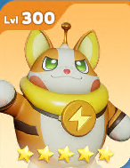
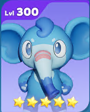

Strategic Counters Guide
Master the art of counter-picking and strategic team building to dominate your opponents.
The Art of the Counter-Pick
In high-level play, victory isn't just about who has the strongest Palmon, but who has the right answer to the opponent's strategy. A well-chosen counter can dismantle a team that is, on paper, much stronger. This guide breaks down how to counter specific threats and common strategies you'll face.
Fundamental Principles
Principle 1: Type Advantage
The most basic form of countering is Type Advantage. Dealing 20% increased damage and taking 20% reduced damage is a significant edge. While a Pal's abilities and rarity are more important, you should always consider type matchups when building a team to face a specific opponent.
Remember: A powerful UR with a type disadvantage will almost always defeat a weak SR with an advantage. Type is a tie-breaker, not a trump card.
Principle 2: Role-Based Countering
- Countering Heavy Tanks (e.g., Statchew): Don't try to brute force them. Use Pals with Defense Shred (Barkplug), sustained damage-over-time effects, or simply ignore the frontline and assassinate their back row with Pals like Hoofrit.
- Countering Glass Cannons (e.g., Lucidina, Mantleray): You must survive their initial burst. Use team-wide damage reduction (Statchew), clutch shields on your vulnerable allies (Platyputz), or use a faster assassin to eliminate them before they can use their Rage Skill (Snowkami).
- Countering Crowd Control (e.g., Abuzzinian, Snowkami): This is the hardest strategy to counter. You can try to burst them down before they act, use your own faster CC Pal, or rely on a durable team that can survive the control duration and fight back afterwards.
Specific Palmon Counters
S-Tier Threats
 Countering Statchew
Countering Statchew
Solutions
- The Hard Counter: Barkplug. Barkplug's 'Ion Disruption' passive reduces all enemy defense by 20%. This perfectly cancels out Statchew's buff and brings the fight back to a level playing field. It is the single best answer.
- The Strategic Counter: Hoofrit. If you can't break the front door down, use the window. Hoofrit's Rage Skill completely ignores the frontline and targets the squishy back row, making Statchew's protection irrelevant.
- The Brute Force Counter: Lucidina. If you stack enough damage buffs on an elite nuker like Lucidina, you can still punch through Statchew's defenses. Her 'Torment' skill, which makes a target take 10% more damage before the nuke hits, is perfect for this.
 Countering Barkplug
Solutions
- The Hard Counter: Statchew. The meta revolves around these two. Statchew's 20% damage reduction for your frontline directly cancels out Barkplug's 20% defense shred, making your tanks durable again.
- The "Kill it First" Counter: Single-Target Nukers. Barkplug is in the front row and vulnerable. A powerful, fast-charging nuker like Dolphriend or Snowkami can target and eliminate him before his team can capitalize on his powerful debuff.
 Countering Magmolin
Countering Magmolin
Solutions
- The Economic Counter: None. You cannot counter his passive. If your opponent has Magmolin and you don't, you are at a permanent resource disadvantage. The only solution is to get your own.
- The Combat Counter: Crowd Control & Burst. In a fight, treat him like any other powerful tank. Use a control Pal like Snowkami to Freeze him, or a stunner like Dolphriend. His Type is Fire, making him vulnerable to strong Water nukers like Lucidina.
Countering Abuzzinian
Solutions
- The AoE Counter: Area Damage. Evasion doesn't work as well against skills that hit a large area. Pals like Fingenue ('Waterspout') or Terrastudo ('Tectonic Spin') can reliably damage Abuzzinian without needing to land a precise hit.
- The Multi-Hit Counter: Overwhelming Attacks. Pals who attack multiple times, like Squeezel or Ninjump, have more chances to get past the Evasion check. While some hits might miss, others are likely to land.
- The "Faster is Better" Counter: Faster CC. Use your own control Pal like Snowkami to try and Freeze Abuzzinian before he can use his paralyzing storm. This turns into a speed race to see who can disable the other first.
A-Tier Threats
 Countering Platyputz
Countering Platyputz
Solutions
- The Overwhelm Counter: AoE Damage. His shield only protects one ally. If you damage the entire enemy team with powerful AoE skills, you can often kill a different target or put the whole team in danger, making his single save less impactful.
- The Bait-and-Switch Counter: Timed Burst. Bait out the shield by bringing one of your allies low. Wait for the 6-second shield to expire, then unleash your true nuke (like from Lucidina or Squeezel) on the now-vulnerable target.
Countering Snowkami
Solutions
- The Speed Counter: A Faster Snowkami. If you have your own Snowkami, this matchup often comes down to which one uses their skill first.
- The Durability Counter: A Hyper-Tanky Team. A team built around Statchew or with multiple tanks might be able to survive having one member frozen for a few seconds and recover.
- The Spread Counter: Redundancy. If you have multiple high-threat damage dealers (e.g., both Hoofrit and Lucidina), he can only freeze one of them. The other is free to execute your game plan.
 Countering Hoofrit
Countering Hoofrit
Solutions
- The Control Counter: Snowkami. Freeze Hoofrit before he can launch his devastating volley. A frozen Pal is a useless Pal.
- The Reactive Counter: Platyputz. Platyputz's 'Bubble Shield' will almost always land on the ally Hoofrit is targeting, allowing them to survive the nuke.
- The Evasion Counter: Abuzzinian. Placing a high-evasion Pal like Abuzzinian in the back row can cause Hoofrit's entire Rage Skill to miss, completely wasting his turn.
 Countering Lucidina
Countering Lucidina
Solutions
- The Proactive Counter: Faster Control. Just like with Hoofrit, the best solution is to disable her before she can act. A faster Snowkami or Dolphriend stun can shut her down completely.
- The Sacrificial Counter: Bait Tank. Place your absolute tankiest Pal, like Statchew, directly in front of her. She might still kill him, but it will take her longer and waste her powerful nuke on a defensive unit instead of your core DPS.
 Countering Dolphriend
Countering Dolphriend
Solutions
- The Type Counter: Electricity Nukers. As a Water type, Dolphriend is vulnerable to Electricity. A powerful nuke from Barkplug can often eliminate him quickly.
- The Control Counter: Freeze > Stun. Snowkami's Freeze is a perfect answer, as it prevents Dolphriend from charging or using his own stun skill.
 Countering Baboom
Countering Baboom
Solutions
- The Synergy-Break Counter: AoE Damage. His power is diminished if his Earth allies are dead. Use strong AoE Pals to weaken or kill his teammates, isolating him and rendering his leadership passive less effective.
- The Type Counter: Fire Assassins. As an Earth Pal, he is weak to Fire. Hoofrit is an excellent choice, as he can target and potentially one-shot Baboom, decapitating the enemy's strategy.
 Countering Incineraptor
Countering Incineraptor
Solutions
- The Economic Counter: None. You cannot counter his passive in a fight. The solution is to get your own or focus on winning fights to offset the resource difference.
- The Combat Counter: Standard Backline Pressure. Treat him like any other back-row damage dealer. He's vulnerable to assassins like Hoofrit and can be disabled by control effects.
 Countering Cerverdant
Countering Cerverdant
Solutions
- The "Kill the Engine" Counter: Assassination. Cerverdant is a high-priority target. Since he's often in the back, use an assassin like Hoofrit to eliminate him before he can use his buff. This cripples the entire enemy team's damage output.
- The Disruption Counter: AoE CC. A well-timed multi-target paralysis from Abuzzinian can prevent the buff from ever going off.
 Countering Surveilynx
Countering Surveilynx
Solutions
- The Combat Counter: Standard Tactics. He has no special combat passives. Treat him as a generic damage dealer. He is weak to Fire, making Magmolin or Hoofrit effective against him. Any strong tank can wall him, and any strong nuker can kill him.
B-Tier Threats
 Countering Squeezel / Bruiseberry / Vulcanid
Countering Squeezel / Bruiseberry / Vulcanid
Solutions
- The Tank Counter: A Proper Tank. A well-built tank like Platyputz or Statchew can usually survive their initial nuke.
- The Control Counter: Stun or Freeze. Any form of crowd control will interrupt their damage. Snowkami is particularly effective.
Countering Blazeal / Ninjump / Fingenue / Terrastudo
Solutions
- The "Hit Harder" Counter: Superior DPS. These Pals bring no tricks, so the fight comes down to numbers. A-tier and S-tier damage dealers will simply outperform and defeat them.
- The Generic Counter: Focus Fire. Identify the biggest damage threat among them and have your team focus them down. They have no special defensive mechanics to save them.
 Countering Maximito / Axollium
Solutions
- The Priority Counter: Ignore Them (Initially). Their damage is not high enough to be a primary threat. Focus on killing the enemy's main damage dealers first. Once the real threats are gone, you can clean up these utility Pals.
C, D, and F-Tier (Low-Priority Targets)
Countering Lendanear, Rotorlotor, Wyvierno, Meowdame, Thunderclawd
Solutions
- Solution: Ignore This Target. In any serious battle, your opponent will have much bigger threats on the field. Wasting a powerful Rage Skill on a C-Tier Pal is a strategic mistake. Focus fire on their A-Tier and S-Tier Pals. These can be cleaned up last.
 Countering All SR Pals (Flouffant, Graffitty, Herculeaf, Spinchilla, Kilohopp, Emboa, Auktyke)
Countering All SR Pals (Flouffant, Graffitty, Herculeaf, Spinchilla, Kilohopp, Emboa, Auktyke)
Solutions
- Solution: They are not a threat. If you see an SR Pal in an enemy's PvP lineup, they are either a new player or they have made a grave mistake. Do not target them. Eliminate every other SSR and UR on the enemy team first. Any AoE damage will likely kill them incidentally.